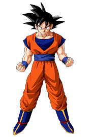
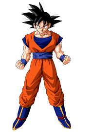

Transforme-se em Super Saiyajin!
Desbloqueie o poder oculto dentro de você e ative as formas mais poderosas, como o Super Saiyajin!
A energia de luta de Goku e seus amigos pode ser usada para ativar diferentes formas e habilidades especiais.
Desbloqueie o poder oculto dentro de você e ative as formas mais poderosas, como o Super Saiyajin!
A energia de luta de Goku e seus amigos pode ser usada para ativar diferentes formas e habilidades especiais.
